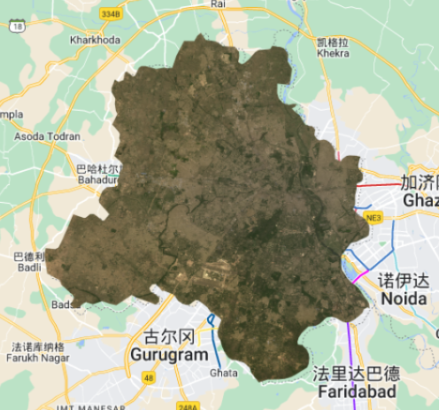

5 Week5 An introduction to Google Earth Engine
5.1 Summary
5.1.1 What is Google Earth Engine?
Google Earth Engine is a cloud platform developed by Google, and it can process satellite imagery from Landsat and other geospatial data uploaded by users.
5.1.2 Mind map
5.1.3 Key concepts about GEE
GEE terms
| GEE | R |
|---|---|
| image | raster |
| feature | vector |
| stack | collection |
Javascript
GEE use javascript (web programming language) to manipulate data.
var define objects
// add comments
// key codes in GEE
var number = 1
var string = 'Hello, World!'
var list = [1.23, 8, -3]
print(list[2])
var dictionary = {
a: 'Hello',
b: 10,
c: 0.1343,
d: list
}
print(dictionary.b)
print(number, string, list, dictionary)Client and server
| client | server |
|---|---|
| web page on the browser | all data are stored on the server |
| code shows on the browser | codes runs on the server |
Loop and map
don’t use loop on the server
use mapping functions(only loading image collection once, and get results)
code examples
Loop
list = [1,2,3] bias = 1 x = 0 for x < list.length: list[x]=list[x]+bias list= [2,3,4]Map
list.map(list=list+1) list =[2,3,4]
Scale
refers to pixel resolution
output are aggregated (256*256 grid)
always need to set a scale, if not, the pixel values may change

Projection
displays all data into Mercator projection (EPSG: 3857)
5.1.4 How to use GEE?
Objects and method overview
Code editor

Load image collection
use ee.ImageCollection() to load, filterDate() and filterBounds() to select specific date and locations, otherwise, GEE will have errors because too many elements.
var oneimage = ee.ImageCollection('LANDSAT/LC09/C02/T1_L2')
.filterDate('2022-01-03', '2022-04-04')
.filterBounds(Dheli); // Intersecting ROI
Map.addLayer(oneimage, {bands: ["SR_B4", "SR_B3", "SR_B2"]})Load feature collection
features refers to the geometries with attributes, use ee.FeatureCollection() to load, filter() to select specific area, like R
var india = ee.FeatureCollection('users/jesse/china');
print(china, "china");
Map.addLayer(china, {}, "china");var india = ee.FeatureCollection('users/jesse/china')
.filter('GID_1 == "CHN.25_1"');Reducing images
When I only want to classify one image from a massive image collections, use this method. The process of this is to take all median of all images to make a image composite, then summarized into one single image. This process ignored some extreme values, but they may be useful.
collection.reduce() client side
ee.Reducer() server side
// Compute the median in each band, each pixel.
// Band names are B1_median, B2_median, etc.
var median = collection.reduce(ee.Reducer.median());by region
reduceRegion() reduce region a single region
by region(s)
reduceRegions() reduce region in many small areas
by neighborhood
reduceNeighborhood() reduce by image neighborhood (surrounded pixels)
Linear regression
linearFit() Look change over time. For example, the change of temperature over last decades
dependent variables, like temperature
independent varibles, often time
Multiple Linear Regression
constant band are required, and need to mentioned the number of X and Y
.map(createConstantBand)var linearRegression = collection.reduce(
ee.Reducer.linearRegression({
numX: 2,
numY: 2
}));Join
join.apply() similar to joins in R
Example: add all plants within 100km buffer of the National park
code link: https://code.earthengine.google.com/7424ebd78cf7d634f161a0a0619019ea (Source: Andrew Maclachlan)
5.1.5 Common examples of GEE Analysis
my code link: https://code.earthengine.google.com/a0d4d4aa44552e6a529e39a1d6a3f572
Clip Images
use polygon to clip study area
var clip = meanImage.clip(india)
.select(['SR_B1', 'SR_B2', 'SR_B3', 'SR_B4', 'SR_B5', 'SR_B6', 'SR_B7']);
var vis_params3 = {
bands: ['SR_B4', 'SR_B3', 'SR_B2'],
min: 0,
max: 0.3,
};
// map the layer
Map.addLayer(clip, vis_params3, 'clip');
Texture measures
help users to extract useful information by applying some mathematical formulas on pixels values. So it can improve the accuracy of image classification and enhance the interpretation of remote sensing data.
use
glcmTexture()in GEEsize means the number of neighborhoods, 1 means a 3*3 grid
var glcm = clip.select(['SR_B1', 'SR_B2', 'SR_B3', 'SR_B4', 'SR_B5', 'SR_B6', 'SR_B7'])
.multiply(1000)
.toUint16()
.glcmTexture({size: 1})
.select('SR_.._contrast|SR_.._diss')
.addBands(clip);
// add to the map, but change the range values
Map.addLayer(glcm, {min:14, max: 650}, 'glcm');
PCA
// scale and band names
var scale = 30;
var bandNames = glcm.bandNames();
print('GLCM band names:', glcm.bandNames());
var region = india.geometry();
Map.centerObject(region, 10);
Map.addLayer(ee.Image().paint(region, 0, 2), {}, 'Region');
print(region, "india_geometry");
// mean center the data and SD strech the princapal components
// and an SD stretch of the principal components.
print('bandNames:', bandNames);
var meanDict = glcm.reduceRegion({
reducer: ee.Reducer.mean(),
geometry: region,
scale: scale,
maxPixels: 1e9
});
print('Mean Dictionary:', meanDict);
var means = ee.Image.constant(meanDict.values(bandNames));
print("Means: ", means);
var centered = glcm.subtract(means);
// This helper function returns a list of new band names.
var getNewBandNames = function(prefix) {
var seq = ee.List.sequence(1, bandNames.length());
return seq.map(function(b) {
return ee.String(prefix).cat(ee.Number(b).int());
});
};
// This function accepts mean centered imagery, a scale and
// a region in which to perform the analysis. It returns the
// Principal Components (PC) in the region as a new image.
var getPrincipalComponents = function(centered, scale, region) {
// Collapse the bands of the image into a 1D array per pixel.
var arrays = centered.toArray();
// Compute the covariance of the bands within the region.
var covar = arrays.reduceRegion({
reducer: ee.Reducer.centeredCovariance(),
geometry: region,
scale: scale,
maxPixels: 1e9
});
// Get the 'array' covariance result and cast to an array.
// This represents the band-to-band covariance within the region.
var covarArray = ee.Array(covar.get('array'));
// Perform an eigen analysis and slice apart the values and vectors.
var eigens = covarArray.eigen();
// This is a P-length vector of Eigenvalues.
var eigenValues = eigens.slice(1, 0, 1);
// This is a PxP matrix with eigenvectors in rows.
var eigenValuesList = eigenValues.toList().flatten();
var total = eigenValuesList.reduce(ee.Reducer.sum());
var percentageVariance = eigenValuesList.map(function(item) {
return (ee.Number(item).divide(total)).multiply(100).format('%.2f')});
print("percentageVariance", percentageVariance);
var eigenVectors = eigens.slice(1, 1);
// Convert the array image to 2D arrays for matrix computations.
var arrayImage = arrays.toArray(1);
// Left multiply the image array by the matrix of eigenvectors.
var principalComponents = ee.Image(eigenVectors).matrixMultiply(arrayImage);
// Turn the square roots of the Eigenvalues into a P-band image.
var sdImage = ee.Image(eigenValues.sqrt())
.arrayProject([0]).arrayFlatten([getNewBandNames('sd')]);
// Turn the PCs into a P-band image, normalized by SD.
return principalComponents
// Throw out an an unneeded dimension, [[]] -> [].
.arrayProject([0])
// Make the one band array image a multi-band image, [] -> image.
.arrayFlatten([getNewBandNames('pc')])
// Normalize the PCs by their SDs.
.divide(sdImage);
};
// Get the PCs at the specified scale and in the specified region
var pcImage = getPrincipalComponents(centered, scale, region);
Map.addLayer(pcImage, {bands: ['pc2', 'pc1'], min: -2, max: 2}, 'PCA bands 1 and 2');p1 and p2 has the highest percentage, and they are the most important components. Here, extract pc1 and pc2.
NDVI
important index that helps vegetation analysis in many cases.
// common methods
var NDVI_1 = clip.select('SR_B5').subtract(clip.select('SR_B4'))
.divide(clip.select('SR_5').add(clip.select('SR_B4')));
// GEE functions
var NDVI_2 = clip.normalizedDifference([SR_B5, SR_B4]);
Map.addLayer(NDVI_1, { min: -1, max: 1, palette: ['blue', 'white', 'green']}, 'NDVI');Export layers
use Export.image.toDrive()
// Export the image, specifying the CRS, transform, and region.
Export.image.toDrive({
image: PCA_out,
description: 'PCA_india',
scale:30,
crs: projection.crs,
maxPixels: 100E10,
region: bounds
});5.2 Application
Google earth engine is a powerful tool with many advantages in remote sensing analysis. It does not require users to download large satellite images, and users can access a large range of Landsat images stored on the server. It also has a strong computing platform, and users can do analysis on the server rather than running analysis on personal computers. In this application, I tried to explore some papers, and find the procedure of remote sensing analysis in Google Earth Engine.
5.2.1 Case 1: Detecting land cover change in Singapore
The first paper was conducted by Sidhu, Pebesma, and Câmara (2018a), and they explored the land cover change by using GEE in Singapore. Also, they examined the ability of GEE, and they found GEE has three strengths. The first one is the ease of functionality, and they can easily upload other data by using Asset Manager. Then, GEE has efficient processing capabilities, and this makes it easy to run spatial reductions. Finally, the computational powers are strong, and the computational times are within a matter of time. Moreover, they found the activity of dredging increased from 2006 to 2010 in Singapore (Sidhu, Pebesma, and Câmara (2018b)).
Method
The framework of the method they used clearly shows the analysis procedures of doing remote sensing research in GEE. In the data preparation, they uploaded some imagery and filtered imagery on GEE. Then, they used the polygon of the study area to clip the imagery. Finally, they created a function for collection reductions.
This framework of method focuses on the analysis of remote sensing data at the temporal level. The main function applied here is reducer in GEE. However, GEE also can do analysis like PCA, and texture measure. This requires a different framework of the method.
Output
5.2.2 Case2: Land Surface Temperature Estimation in central Portugal
The second paper applied GEE to estimate land surface temperature(LST). LST is an important factor contributing to many scientific studies. However, the traditional way to get the LST is relatively hard for some users. This paper illustrates the detailed steps of calculating LST and the free code in GEE. Other users can easily change the dataset and create their LST data of study areas by running codes in GEE.
This study used Landsat 4 to Landsat 8 data and calculated the LST by Statistical Mono-Window (SMW algorithm), and this algorithm is calibrated(Ermida et al. (2020)). The detailed processing steps are followed in the next figure. The blue words shows functions and the grey words shows datasets used in analysis. Both TOA and SR collection are processed with cloudmask, and this reduces the influence of clouds in the data.
Output
The bottom right figure shows the final LST in study area, and the remaining figures are the data used in SMW algorithm.
Code link: https://earthengine.googlesource.com/users/sofiaermida/landsat_smw_lst
(Source: Ermida et. al, 2020)
5.3 Reflection
Most of the analysis for remote sensing data in GEE is easier than those in R. For example, I don’t need to download data, and load them in R or SNAP, and I can easily access the data and visualize them in GEE. Also, the texture measure in GEE is just a few codes, but it is complex in R. However, the PCA in GEE is quite more complex than it in R.
In practice this week, I found print() is a really useful function that can help me identify errors in the code, and it also helps me to check the result of every step in the right way. For instance, there is a wrong object used in the code, and when I applied the get_info() function, it showed there is no this band. Finally, I used print() to find where had the wrong object. In addition, the NDVI in band math will be a useful tool for identifying vegetation in the study area. Similarly, LST in the second case study is also a good variable when exploring some topics about temperature.
The google earth engine codes are sharable, which is similar to GitHub. This provides more chances to group work and generates a better analysis process in teamwork. Also, I can explore many open-source codes so that I can learn other data analysis processes and methods in the future.
I think GEE is a form of big data application in the geospatial data area because it can store massive data on the server, and the users use Javascript to query and load data. The first paper mentions that GEE uses MapReduce architecture (Sidhu, Pebesma, and Câmara (2018c)), which is popular in big data technology. The idea of this architecture is to divide the big dataset into several small ones, and run the analysis on different servers. The final output will be recompiled and returned to us. I think this idea is really helpful in my learning as a data analyst. When I need to handle massive data, I can reduce the dataset and do analysis.
Like the video about machine learning at the end of the lecture, I think machine learning will be an efficient tool that can help me to handle large image datasets. I can use the datasets to build a machine-learning model, and the model can predict the component or characteristics in the images. Also, the paper I mentioned in week 4 also uses the machine learning method to discover potential planting sites. So I think this can help me to figure out the classification problems in remote sensing.